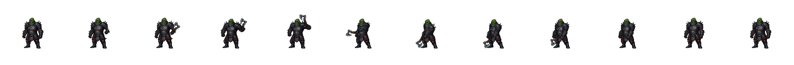
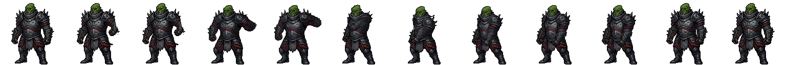

GRIP_FRONT_L_AXE_FULL_READY · TECHNICALLY_COMPLETE · VISUAL_REVIEW_REQUIRED · PENDING_CREATOR.
Ciclo completo equipado candidato para QA independente. Corpo frontal 100% preservado (0 delta RGBA). Pegada genuína com luvas rastreadas do corpo base; arma visível exclusivamente no visibleInterval (2..8).
Carregando…
Carregando exports reais…
Relatório · Checkpoint · clip.json · representative.json · checks.json

